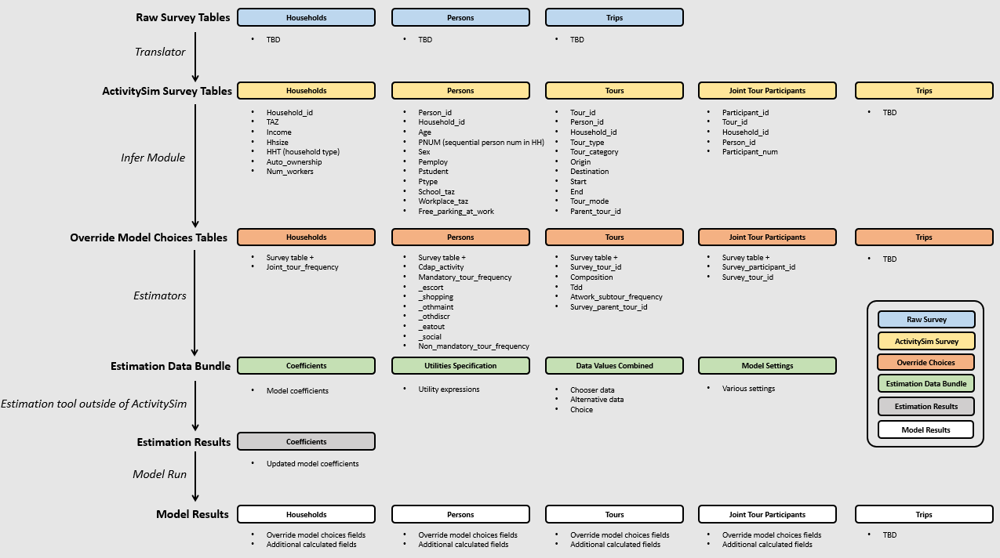

Example¶
This page describes the example model design, how to setup and run the example, how to review outputs, and how to re-estimate submodels. The default configuration of the example is limited to a small sample of households and zones so that it can be run quickly and require less than 1 GB of RAM. The full scale example can be configured and run as well.
Example Model Design¶
The example AB model implemented with the activitysim framework is Bay Area Metro Travel Model One (TM1). TM1 has its roots in a wide array of analytical approaches, including discrete choice forms (multinomial and nested logit models), activity duration models, time-use models, models of individual micro-simulation with constraints, entropy-maximization models, etc. These tools are combined in the model design to realistically represent travel behavior, adequately replicate observed activity-travel patterns, and ensure model sensitivity to infrastructure and policies. The model is implemented in a micro-simulation framework. Microsimulation methods capture aggregate outcomes through the representation of the behavior of individual decision-makers.
Space¶
TM1 uses the 1454-zone system developed for the MTC trip-based model. The zones are fairly large for the region, which may somewhat distort the representation of transit access in mode choice. To ameliorate this problem, the original model zones were further sub-divided into three categories of transit access: short walk, long walk, and not walkable. However, support for transit subzones is not included in the activitysim implementation since the latest generation of activity-based models typically use an improved approach to spatial representation called multiple zone systems.
In brief, under a multiple zone system approach, all households are assigned to microzones (which are smaller than traditional TAZs) and trips are assigned to origin and destination microzones. When considering network level-of-service (LOS) indicators, the model uses different spatial resolutions for different travel modes. For example:
TAZs are used for auto network modeling and a set of taz-to-taz skims is input to the demand model
Microzones are used for nearby non-motorized mode (walk and bike) network modeling and skims and a set of nearby maz-to-maz skims is input to the demand model
Transit access points (TAPs) (or transit catchment areas) are used for transit network modeling and skims and a set of tap-to-tap skims is input to the demand model
Microzone to transit access point for transit access/egress LOS is input to the demand model
Since trips are modeled in the demand model from microzone to microzone, but transit network LOS is split across two input data sets, transit virtual path building (TVPB) is done to generate LOS measures from:
the trip origin microzone to a select number of nearby TAPs using microzone to TAP LOS measures
boarding TAP to alighting TAP LOS measures (TAP to TAP skims)
alighting TAP to destination microzone using microzone to TAP LOS measures
The resulting complete transit path LOS for the best, or a bundle of, paths is then used in the demand model for representing transit LOS at the microzone level.
Support for multiple zone systems is NOT YET IMPLEMENTED, but planned for the next release. For the time being, all travel is modeled at the TAZ level.
Decision-making units¶
Decision-makers in the model system are households and persons. These decision-makers are created for each simulation year based on a population synthesis process such as PopulationSim. The decision-makers are used in the subsequent discrete-choice models to select a single alternative from a list of available alternatives according to a probability distribution. The probability distribution is generated from various logit-form models which take into account the attributes of the decision-maker and the attributes of the various alternatives. The decision-making unit is an important element of model estimation and implementation, and is explicitly identified for each model.
Person type segmentation¶
TM1 is implemented in a micro-simulation framework. A key advantage of the micro-simulation approach is that there are essentially no computational constraints on the number of explanatory variables which can be included in a model specification. However, even with this flexibility, the model system includes some segmentation of decision-makers. Segmentation is a useful tool both to structure models and also as a way to characterize person roles within a household.
The person types shown below are used for the example model. The person types are mutually exclusive with respect to age, work status, and school status.
Person Type |
Age |
Work Status |
School Status |
|---|---|---|---|
Full-time worker (30+ hours a week) |
18+ |
Full-time |
None |
Part-time worker (<30 hours but works on a regular basis) |
18+ |
Part-time |
None |
Non-working adult |
18 - 64 |
Unemployed |
None |
Retired person |
65+ |
Unemployed |
None |
College student |
18+ |
Any |
College |
Driving age student |
16 - 17 |
Any |
Pre-college |
Non-driving student |
6 - 16 |
None |
Pre-college |
Pre-school child |
0 - 5 |
None |
Preschool |
Household type segments are useful for pre-defining certain data items (such as destination choice size terms) so that these data items can be pre-calculated for each segment. Precalculation of these data items reduces model complexity and runtime. The segmentation is based on household income, and includes four segments - low, medium, high, very high.
In the model, the persons in each household are assigned a simulated but fixed value of time that modulates the relative weight the decision-maker places on time and cost. The probability distribution from which the value of time is sampled was derived from a toll choice model estimated using data from a stated preference survey performed for the SFCTA Mobility, Access, and Pricing Study, and is a lognormal distribution with a mean that varies by income segment.
Activity type segmentation¶
The activity types are used in most model system components, from developing daily activity patterns and to predicting tour and trip destinations and modes by purpose. The set of activity types is shown below. The activity types are also grouped according to whether the activity is mandatory or non-mandatory and eligibility requirements are assigned determining which person-types can be used for generating each activity type. The classification scheme of each activity type reflects the relative importance or natural hierarchy of the activity, where work and school activities are typically the most inflexible in terms of generation, scheduling and location, and discretionary activities are typically the most flexible on each of these dimensions. Each out-of-home location that a person travels to in the simulation is assigned one of these activity types.
Purpose |
Description |
Classification |
Eligibility |
|---|---|---|---|
Work |
Working at regular workplace or work-related activities outside the home |
Mandatory |
Workers and students |
University |
College or university |
Mandatory |
Age 18+ |
High School |
Grades 9-12 |
Mandatory |
Age 14-17 |
Grade School |
Grades preschool, K-8 |
Mandatory |
Age 0-13 |
Escorting |
Pick-up/drop-off passengers (auto trips only) |
NonMandatory |
Age 16+ |
Shopping |
Shopping away from home |
NonMandatory |
Age 5+ (if joint travel, all persons) |
Other Maintenance |
Personal business/services and medical appointments |
NonMandatory |
Age 5+ (if joint travel, all persons) |
Social/Recreational |
Recreation, visiting friends/family |
NonMandatory |
Age 5+ (if joint travel, all persons) |
Eat Out |
Eating outside of home |
NonMandatory |
Age 5+ (if joint travel, all persons) |
Other Discretionary |
Volunteer work, religious activities |
NonMandatory |
Age 5+ (if joint travel, all persons) |
Treatment of time¶
The TM1 example model system functions at a temporal resolution of one hour. These one hour increments begin with 3 AM and end with 3 AM the next day. Temporal integrity is ensured so that no activities are scheduled with conflicting time windows, with the exception of short activities/tours that are completed within a one hour increment. For example, a person may have a short tour that begins and ends within the 8 AM to 9 AM period, as well as a second longer tour that begins within this time period, but ends later in the day.
A critical aspect of the model system is the relationship between the temporal resolution used for scheduling activities and the temporal resolution of the network assignment periods. Although each activity generated by the model system is identified with a start time and end time in one hour increments, LOS matrices are only created for five aggregate time periods. The trips occurring in each time period reference the appropriate transport network depending on their trip mode and the mid-point trip time. The definition of time periods for LOS matrices is given below.
Time Period |
Start Hour |
End Hour |
|---|---|---|
EA |
3 |
6 |
AM |
6 |
11 |
MD |
11 |
15 |
PM |
15 |
20 |
EV |
20 |
3 |
Trip modes¶
The trip modes defined in the example model are below. The modes include auto by occupancy and toll/non-toll choice, walk and bike, walk and drive access to five different transit line-haul modes, and ride hail with taxi, single TNC (Transportation Network Company), and shared TNC.
Auto
SOV Free
SOV Pay
2 Person Free
2 Person Pay
3+ Person Free
3+ Person Pay
Nonmotorized
Walk
Bike
Transit
Walk
Walk to Local Bus
Walk to Light-Rail Transit
Walk to Express Bus
Walk to Bus Rapid Transit
Walk to Heavy Rail
Drive
Drive to Local Bus
Drive to Light-Rail Transit
Drive to Express Bus
Drive to Bus Rapid Transit
Drive to Heavy Rail
Ride Hail
Taxi
Single TNC
Shared TNC
Sub-models¶
The general design of the example model is presented below. Long-term choices that relate to the usual workplace/university/school for each worker and student, household car ownership, and the availability of free parking at workplaces are first.
The coordinated daily activity pattern type of each household member is the first travel-related sub-model in the hierarchy. This model classifies daily patterns by three types:
Mandatory, which includes at least one out-of-home mandatory activity (work or school)
Non-mandatory, which includes at least one out-of-home non-mandatory activity, but does not include out-of-home mandatory activities
Home, which does not include any out-of-home activity or travel
The pattern type sub-model leaves open the frequency of tours for mandatory and nonmandatory purposes since these sub-models are applied later in the model sequence. Daily pattern-type choices of the household members are linked in such a way that decisions made by members are reflected in the decisions made by the other members.
After the frequency and time-of-day for work and school tours are determined, the next major model component relates to joint household travel. This component produces a number of joint tours by travel purpose for the entire household, travel party composition in terms of adults and children, and then defines the participation of each household member in each joint household tour. It is followed by choice of destination and time-ofday.
The next stage relates to maintenance and discretionary tours that are modeled at the individual person level. The models include tour frequency, choice of destination and time of day. Next, a set of sub-models relate tour-level details on mode, exact number of intermediate stops on each half-tour and stop location. It is followed by the last set of sub-models that add details for each trip including trip departure time, trip mode details and parking location for auto trips.

The output of the model is a disggregate table of trips with individual attributes for custom analysis. The trips can be aggregated into travel demand matrices for network loading.
Setup¶
The following describes the example model setup.
Folder and File Setup¶
The example has the following root folder/file setup:
configs - settings, expressions files, etc.
configs_mp - override settings for the multiprocess configuration
data - input data such as land use, synthetic population files, and skims
output - outputs folder
Inputs¶
In order to run the example, you first need the input files in the data folder as identified in the configs\settings.yaml file:
input_table_list: the input CSV tables from MTC travel model one:
households - Synthetic population household records for a subset of zones.
persons - Synthetic population person records for a subset of zones.
land_use - Zone-based land use data (population and employment for example) for a subset of zones.
skims_file: skims.omx - an OMX matrix file containing the MTC travel model one skim matrices for a subset of zones.
These files are used in the tests as well and are in the activitysim\abm\test\data folder. The full set
of MTC TM1 households, persons, and OMX skims are on the MTC box account.
Note
ActivitySim can optionally build an HDF5 file of the input CSV tables for use in subsequent runs since HDF5 is binary and therefore results in faster read times. see Configuration
OMX and HDF5 files can be viewed with the OMX Viewer or HDFView.
The other_resources\scripts\build_omx.py script will build one OMX file containing all the skims. The original MTC TM1 skims were converted from
Cube to OMX using the other_resources\scripts\mtc_tm1_omx_export.s script.
The example inputs were created by the other_resources\scripts\create_sf_example.py script, which creates the land use, synthetic population, and
skim inputs for a subset of user-defined zones.
Configuration¶
The configs folder contains settings, expressions files, and other files required for specifying
model utilities and form. The first place to start in the configs folder is settings.yaml, which
is the main settings file for the model run. This file includes:
models- list of model steps to run - auto ownership, tour frequency, etc. - see Pipelineresume_after- to resume running the data pipeline after the last successful checkpointinput_store- HDF5 inputs fileinput_table_list- list of table names, indices, and column re-maps for each table in input_storetablename- name of the injected tablefilename- name of the CSV or HDF5 file to read (optional, defaults to input_store)index_col- table column to use for the indexrename_columns- dictionary of column name mappingskeep_columns- columns to keep once read in to memory to save on memory needs and file I/Oh5_tablename- table name if reading from HDF5 and different from tablename
create_input_store- write new ‘input_data.h5’ file to outputs folder using CSVs from input_table_list to use for subsequent model runsskims_file- skim matrices in one OMX filehouseholds_sample_size- number of households to sample and simulate; comment out to simulate all householdstrace_hh_id- trace household id; comment out for no tracetrace_od- trace origin, destination pair in accessibility calculation; comment out for no tracechunk_size- batch size for processing choosers, see Chunk sizecheck_for_variability- disable check for variability in an expression result debugging feature in order to speed-up runtimeuse_shadow_pricing- turn shadow_pricing on and off for work and school locationoutput_tables- list of output tables to write to CSV or HDF5want_dest_choice_sample_tables- turn writing of sample_tables on and off for all modelsread_skim_cache- read cached skims (using numpy memmap) from output directory (memmap is faster than omx)write_skim_cache- write memmapped cached skims to output directory after reading from omx, for use in subsequent runsskim_cache_dir- alternate dir to read/write skim cache (defaults to output_dir)global variables that can be used in expressions tables and Python code such as:
urban_threshold- urban threshold area type max valuecounty_map- mapping of county codes to county namesskim_time_periods- time period upper bound values and labelstime_window- total duration (in minutes) of the modeled time span (Default: 1440 minutes (24 hours))period_minutes- length of time (in minutes) each model time period represents. Must be whole factor oftime_window. (Default: 60 minutes)periods- Breakpoints that define the aggregate periods for skims and assignmentlabels- Labels to define names for aggregate periods for skims and assignment
household_median_value_of_time- various household and person value-of-time model settings
Sub-Model Specification Files¶
Included in the configs folder are the model specification files that store the
Python/pandas/numpy expressions, alternatives, and other settings used by each model. Some models includes an
alternatives file since the alternatives are not easily described as columns in the expressions file. An example
of this is the non_mandatory_tour_frequency_alternatives.csv file, which lists each alternative as a row and each
columns indicates the number of non-mandatory tours by purpose. The current set of files are below.
Model |
Specification Files |
|---|---|
|
|
|
|
|
|
|
|
|
|
|
|
|
|
|
|
|
|
|
|
|
|
|
|
|
|
|
|
|
|
|
|
|
|
|
|
|
|
|
|
|
|
|
|
|
|
|
|
|
|
|
|
|
|
|
|
|
Chunk size¶
The chunk_size is the number of doubles in a chunk of the choosers table. It is approximately the number
of rows times the number of columns and it needs to be set to a value that efficiently processes the table with
the available RAM. For example, a chunk size of 1,000,000 could be 100,000 household records with 10 columns of attributes.
Setting the chunk size too high will run into memory errors such as OverflowError: Python int
too large to convert to C long. Setting the chunk size too low may result in smaller than optimal vector
lengths, which may waste runtime. The chunk size is dependent on the size of the population, the complexity
of the utility expressions, the amount of RAM on the machine, and other problem specific dimensions. Thus,
it needs to be set via experimentation.
Logging¶
Included in the configs folder is the logging.yaml, which configures Python logging
library and defines two key log files:
activitysim.log- overall system log filehhtrace.log- household trace log file if tracing is on
Refer to the Tracing section for more detail on tracing.
Pipeline¶
The models setting contains the specification of the data pipeline model steps, as shown below:
models:
- initialize_landuse
- compute_accessibility
- initialize_households
- school_location
- workplace_location
- auto_ownership_simulate
- free_parking
- cdap_simulate
- mandatory_tour_frequency
- mandatory_tour_scheduling
- joint_tour_frequency
- joint_tour_composition
- joint_tour_participation
- joint_tour_destination
- joint_tour_scheduling
- non_mandatory_tour_frequency
- non_mandatory_tour_destination
- non_mandatory_tour_scheduling
- tour_mode_choice_simulate
- atwork_subtour_frequency
- atwork_subtour_destination
- atwork_subtour_scheduling
- atwork_subtour_mode_choice
- stop_frequency
- trip_purpose
- trip_destination
- trip_purpose_and_destination
- trip_scheduling
- trip_mode_choice
- write_data_dictionary
- track_skim_usage
- write_trip_matrices
- write_tables
These model steps must be registered orca steps, as noted below. If you provide a resume_after
argument to activitysim.core.pipeline.run() the pipeliner will load checkpointed tables from the checkpoint store
and resume pipeline processing on the next model step after the specified checkpoint.
resume_after = None
#resume_after = 'school_location'
The model is run by calling the activitysim.core.pipeline.run() method.
pipeline.run(models=_MODELS, resume_after=resume_after)
Note
Users can skip persisting tables to the pipeline data store on disk by adding an underscore prefix to the models in the models list in the settings file: _school_location instead of school_location. This will cut down on the disk writes.
Running the MTC Example¶
To run the example, do the following:
Activate the correct conda environment if needed
View the list of available examples
activitysim create --list
Create a local copy of an example folder
activitysim create --example example_mtc --destination my_test_example
Run the example
activitysim run --working_dir my_test_example
or
activitysim run -c my_test_example/configs -d my_test_example/data -o my_test_example/output
ActivitySim should log some information and write outputs to the output folder.
The example should complete within a couple minutes since it is running a small sample of households.
Note
A customizable run script for power users can be found in the Github repo.
This script takes many of the same arguments as the activitysim run command, including paths to
--config, --data, and --output directories. It looks for these folders in the current
working directory by default.
python simulation.py
Multiprocessing¶
The model system is parallelized via Multiprocessing. To setup and run the Example using
multiprocessing, follow the same steps as the above Running the MTC Example, but add an additional -c flag to
include the multiprocessing configuration settings as well:
activitysim run -c my_test_example/configs_mp -c my_test_example/configs -d my_test_example/data -o my_test_example/output
The multiprocessing example also writes outputs to the output folder.
The default multiprocessed example is configured to run with two processors: num_processes: 2. Additional more performant configurations are
included and commented out in the example settings file. For example, the 100 percent sample multiprocessing example was run on a Windows Server
machine with 28 cores @ 2.56GHz and 224GB RAM with the configuration below. See Multiprocessing for more information.
households_sample_size: 0
chunk_size: 5000000000
num_processes: 24
Note
Anaconda Python on Windows uses the Intel Math Kernel Library for many of its computationally intensive low-level C/C++ calculations. By default, MKL threads many of its routines in order to be performant out-of-the-box. However, for ActivitySim multiprocessing, which processes households in parallel since they are largely independent of one another, it can be advantageous to override threading within processes and instead let ActivitySim run each process with one computing core or thread. In order to do so, override the MKL number of threads setting via a system environment variable that is set before running the model. In practice, this means before running the model, first set the MKL number of threads variable via the command line as follows: SET MKL_NUM_THREADS=1
Outputs¶
The key output of ActivitySim is the HDF5 data pipeline file outputs\pipeline.h5. This file contains a copy
of each key data table after each model step in which the table was modified. The example also writes the final tables to
CSV files by using the activitysim.core.pipeline.get_table() method via the write_tables step.
This method returns a pandas DataFrame, which is then written to a CSV file by the write_tables step.
The other_resources\scripts\make_pipeline_output.py script uses the information stored in the pipeline file to create
the table below for a small sample of households. The table shows that for each table in the pipeline, the number of rows
and/or columns changes as a result of the relevant model step. A checkpoints table is also stored in the
pipeline, which contains the crosswalk between model steps and table states in order to reload tables for
restarting the pipeline at any step.
Table |
Creator |
NRow |
NCol |
|---|---|---|---|
accessibility |
compute_accessibility |
1454 |
10 |
households |
initialize |
100 |
65 |
households |
workplace_location |
100 |
66 |
households |
cdap_simulate |
100 |
73 |
households |
joint_tour_frequency |
100 |
75 |
joint_tour_participants |
joint_tour_participation |
13 |
4 |
land_use |
initialize_landuse |
1454 |
44 |
person_windows |
initialize_households |
271 |
21 |
persons |
initialize_households |
271 |
42 |
persons |
school_location |
271 |
45 |
persons |
workplace_location |
271 |
52 |
persons |
free_parking |
271 |
53 |
persons |
cdap_simulate |
271 |
59 |
persons |
mandatory_tour_frequency |
271 |
64 |
persons |
joint_tour_participation |
271 |
65 |
persons |
non_mandatory_tour_frequency |
271 |
74 |
school_destination_size |
initialize_households |
1454 |
3 |
school_modeled_size |
school_location |
1454 |
3 |
tours |
mandatory_tour_frequency |
153 |
11 |
tours |
mandatory_tour_scheduling |
153 |
15 |
tours |
joint_tour_composition |
159 |
16 |
tours |
tour_mode_choice_simulate |
319 |
17 |
tours |
atwork_subtour_frequency |
344 |
19 |
tours |
stop_frequency |
344 |
21 |
trips |
stop_frequency |
859 |
7 |
trips |
trip_purpose |
859 |
8 |
trips |
trip_destination |
859 |
11 |
trips |
trip_scheduling |
859 |
11 |
trips |
trip_mode_choice |
859 |
12 |
workplace_destination_size |
initialize_households |
1454 |
4 |
workplace_modeled_size |
workplace_location |
1454 |
4 |
The write_trip_matrices step processes the trips table to create open matrix (OMX) trip matrices for
assignment. The matrices are configured and coded according to the expressions in the model step
trip annotation file. See Write Trip Matrices for more information.
ActivitySim also writes log and trace files to the outputs folder. The activitysim.log file,
which is the overall log file is always produced. If tracing is specified, then trace files are
output as well.
Tracing¶
There are two types of tracing in ActivtiySim: household and origin-destination (OD) pair. If a household trace ID is specified, then ActivitySim will output a comprehensive set (i.e. hundreds) of trace files for all calculations for all household members:
hhtrace.log- household trace log file, which specifies the CSV files traced. The order of output files is consistent with the model sequence.various CSV files- every input, intermediate, and output data table - chooser, expressions/utilities, probabilities, choices, etc. - for the trace household for every sub-model
If an OD pair trace is specified, then ActivitySim will output the acessibility calculations trace file:
accessibility.result.csv- accessibility expression results for the OD pair
With the set of output CSV files, the user can trace ActivitySim calculations in order to ensure they are correct and/or to help debug data and/or logic errors.
Writing Logsums¶
The tour and trip destination and mode choice models calculate logsums but do not persist them by default. Mode and destination choice logsums are essential for re-estimating these models and can therefore be saved to the pipeline if desired. To save the tour and trip destination and mode choice model logsums, include the following optional settings in the model settings file. The data is saved to the pipeline for later use.
# in workplace_location.yaml for example
DEST_CHOICE_LOGSUM_COLUMN_NAME: workplace_location_logsum
DEST_CHOICE_SAMPLE_TABLE_NAME: workplace_location_sample
# in tour_mode_choice.yaml for example
MODE_CHOICE_LOGSUM_COLUMN_NAME: mode_choice_logsum
The DEST_CHOICE_SAMPLE_TABLE_NAME contains the fields in the table below. Writing out the destination choice sample table, which includes the mode choice logsum for each sampled alternative destination, adds significant size to the pipeline. Therefore, this feature should only be activated when writing logsums for a small set of households for model estimation.
Field |
Description |
|---|---|
chooser_id |
chooser id such as person or tour id |
alt_dest |
destination alternative id |
prob |
alternative probability |
pick_count |
sampling with replacement pick count |
mode_choice_logsum |
mode choice logsum |
Estimation¶
Note
Estimation mode is under development. Estimation mode has not yet been implemented for the trip models (stop_frequency, trip_destination, trip_scheduling, and trip_mode_choice). The trip model expressions files are also in the old format - i.e. data and coefficients have yet to be separated into different files.
ActivitySim includes the ability to easily re-estimate submodels using choice model estimation tools such as larch. In order to do so, ActivitySim adopts the concept of an estimation data bundle (EDB), which is a collection of the necessary data to restimate a submodel. For example, for the auto ownership submodel, the EDB consists of the following files:
model settings - the auto_ownership_model_settings.yaml file
coefficients - the auto_ownership_coefficients.csv file with each coefficient name, value, and constrain set to True or False if the coefficient is estimatable
utilities specification - the auto_ownership_SPEC.csv utility expressions file
chooser and alternatives data - the auto_ownership_values_combined.csv file with all chooser and alternatives data such as household information, land use information, and the utility data components for each alternative
ActivitySim also includes Example Jupyter notebooks for estimating models with larch.
The combination of writing an EDB for a submodel + a larch estimation notebook means users can easily re-estimate submodels. This combination of functionality means:
There is no duplication of model specifications. ActivitySim owns the specification and larch pivots off of it. Users code model specifications and utility expressions in ActivitySim so as to facilitate ease of use and eliminate inconsistencies and errors between the code used to estimate the models and the code used to apply the models.
The EDB includes all the data and model structure information and the larch.util.activitysim module used by the example notebooks processes the EDB to setup and estimate the models.
Users are able to add zones, alternatives, new chooser data, new taz data, new modes, new coefficients, revise utilities, and revise nesting structures in ActivitySim and larch responds accordingly.
Eventually it may be desirable for ActivitySim to automatically write larch estimators (or other types of estimators), but for now the integration is loosely coupled rather than tightly coupled in order to provide flexibility.
Workflow¶
The general workflow for estimating models is shown in the figure below and explained in more detail below.
The user converts their household travel survey into ActivitySim format households, persons, tours, joint tour participants, and trip tables. The households and persons tables must have the same fields as the synthetic population input tables since the surveyed households and persons will be run through the same set of submodels as the simulated households and persons.
The ActivitySim estimation example
scripts\infer.pymodule reads the ActivitySim format household travel survey files and checks for inconsistencies in the input tables versus the model design + calculates additional fields such as the household joint tour frequency based on the trips and joint tour participants table. Survey households and persons observed choices much match the model design (i.e. a person cannot have more work tours than the model allows).ActivitySim is then run in estimation mode to read the ActivitySim format household travel survey files, run the ActivitySim submodels to write estimation data bundles (EDB) that contains the model utility specifications, coefficients, chooser data, and alternatives data for each submodel. Estimation mode runs single-processed and without destination sampling.
The relevant EDBs are read and transformed into the format required by the model estimation tool (i.e. larch) and then the coefficients are re-estimated.
The user can then update the ActivitySim model coefficients file for the estimated submodel and re-run the model in simulation mode. The user may want to use the restartable pipeline feature of ActivitySim to just run the submodel of interest.
Example¶
To run the estimation example, do the following:
Activate the correct conda environment if needed
Create a local copy of the estimation example folder
activitysim create -e example_estimation -d test_example_estimation
Run the example
cd test_example_estimation
activitysim run -c configs_estimation/configs -c configs -o output -d data_test
ActivitySim should log some information and write outputs to the output folder, including EDBs for each submodel. The estimation example runs in about 5 minutes and writes EDBs for 2000 households.
Open the relevant estimation with larch example Jupyter Notebook and re-estimate the submodel:
Save the updated coefficient file to the configs folder and run the model in simulation mode.
Settings¶
Additional settings for running ActivitySim in estimation mode are specified in an estimation.yaml file that is specified in addition to settings.yaml. The settings are:
enable- enable estimation, either True or Falsebundles- the list of submodels for which to write EDBssurvey_tables- the list of input ActivitySim format survey tables with observed choices to override model simulation choices in order to write EDBs. These tables are the output of thescripts\infer.pyscript that pre-processes the ActivitySim format household travel survey files